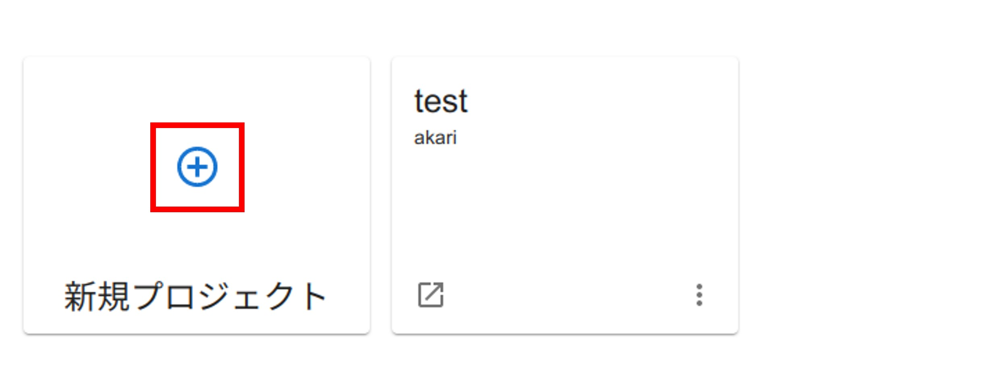

プロジェクトを使ってみよう
ここからは、webコンソールからプログラムを書いて、AKARIを動かす方法を学習していきます。
解説動画
以降の解説を動画にしたものです。こちらもご参考ください。
Projectsページの説明
ここではProjectsページについて説明していきます。
プロジェクトについて
プロジェクトは、ユーザが作成することができるAKARIのアプリに該当するものです。
各プロジェクトごとに、home直下の akari_projects ディレクトリに格納されています。
各プロジェクトは akari_manifest.yaml というファイルを持っており、ここにプロジェクトの基本情報が書かれています。
プロジェクトページの見方
プロジェクトページの見方を説明します。
カード表示
{kind=link}
リスト表示
{kind=link}
1. 更新ボタン
プロジェクト一覧の更新ができます。
2. View切替ボタン
ここでAKARIのプロジェクト一覧の表示形式をカード形式とリスト形式に切り替えできます。
3. 新規プロジェクトボタン
新しいプロジェクトを作成できます。
4. プロジェクト一覧
プロジェクトの一覧が表示されます。プロジェクト名を選択すると、プロジェクトが開きます。各プロジェクトには下記の項目があります。・プロジェクト名プロジェクトの名前です。・作者名作者の名前です。・概要プロジェクトの概要です。・サービスボタンサービスページに飛びます。・削除ボタンプロジェクトを削除します。
プロジェクトを作ってみよう
まずは、プロジェクトを作ってみましょう。
Projectsページを開く。
左のページリストから、Projectsを選択し、開きます。
{kind=link}
新規プロジェクトボタンを押す。
新規プロジェクトボタンを押し、新しいプロジェクトを作成します。
{kind=link}
必要な項目を編集する。
新たにプロジェクト作成用のページが開くので、必要な情報を編集してきます。プロジェクトの作成方法には、 テンプレートから作成 と GITレポジトリから作成 があります。今回は テンプレートから作成 を選択し、下記情報を記入します。プロジェクト名: 好きな名前を入れます。作者名: 任意で作者名を記載します。空欄でも問題ありません。URL:Git公開機能が実装時には、このURLを使って公開しますが、現時点では未実装なので空欄にしてください。テンプレート: プロジェクトのテンプレートスタイルです。今回はBASICを選択してください。概要: 任意でプロジェクトの概要を入れます。空欄でも問題ありません。
{kind=link}
作成ボタンを押す。
プロジェクトの一覧に戻り、作成したプロジェクトが一覧に追加されます。
{kind=link}
プロジェクトを開いてみよう
次に、作成したプロジェクトを開いてみましょう。
ここでは、 サービスを使ってみよう から JupyterLabのサービスをあらかじめ起動している前提 で説明します。
プロジェクト一覧からプロジェクト名を選択します。

プロジェクトページが開くので、右上の OPEN WITH SERVICE をクリックし、先程起動したサービスからプロジェクトの編集に使いたいものを選択します。
{kind=link}
サービスを使って、プロジェクトのページがポップアップします。
このポップアップしたJupyterLab上で、プログラムを書いて実行することでAKARIを動かすことができます。
gitレポジトリからプロジェクトを作ってみよう
次に、git上に公開されているAKARIのプロジェクトを使ってプロジェクトを作成してみましょう。
今回は、次ページ以降で使うakari_tutorialを例にして進めます。
以降の解説を動画にしたものです。こちらもご参考ください。
Projectsページを開く。
webコンソールに戻って、左のページリストからProjectsを選択し、開きます。
新規プロジェクトボタンを押す。
新規プロジェクトボタンを押し、新しいプロジェクトを作成します。
「GITレポジトリから作成」を選択する。
「GITレポジトリから作成」を選択し、タブを切り替えます。
{kind=link}
プロジェクトを作成する。
akarai_tutorialのcloneに必要な情報を入力し、作成ボタンを押します。gitブランチ名: main
{kind=link}
akari_tutorialというプロジェクトが作成されます。
次に、今回作成したakari_tutorialを動かしてみましょう。
サービスを使ってみよう へ戻る